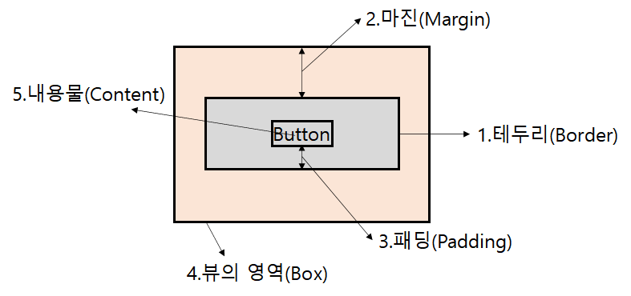
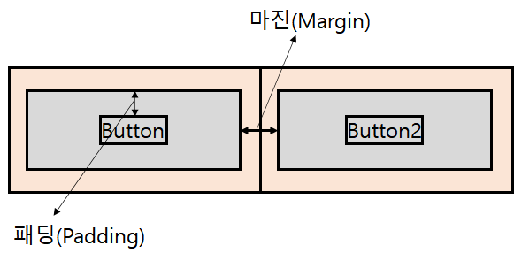
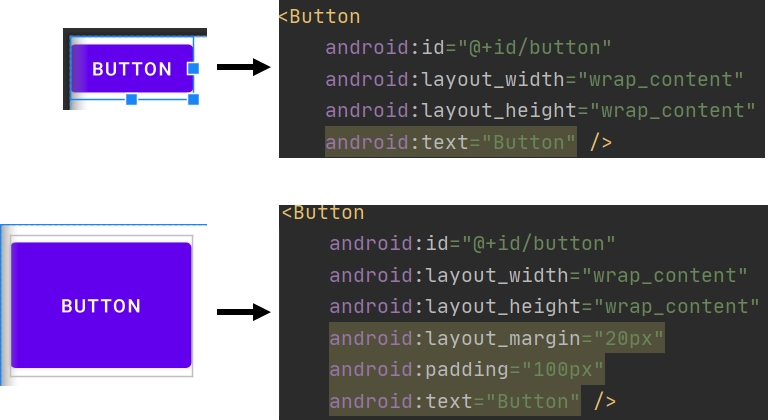

#1 뷰의 영역
#2 마진 & 패딩 조절방법
* 개인적인 안드로이드 공부 내용을 정리한 글 이기에, 잘못된 내용이 있을 수 있습니다.
#1 뷰의 영역
모든 뷰는 뷰의 영역(Box) 이라는 공통되는 특성을 가지고 있다. 뷰는 1.테두리(Border) 를 기준으로 바깥쪽과 안쪽 영역을 구분한다. 또한 각 뷰는 테두리 외부에 보이지 않는 투명한 영역을 가지고 있다.
테두리 안의 5.내용물(Content)과 테두리 사이의 공간을 3.패딩(Padding) 이라 부르며 (버튼이라면 텍스트, 혹은 이미지 일 수도 있다.) 테두리와 바깥 쪽 투명한 영역 사이의 거리를 2.마진(Margin) 이라고 부른다.

만약 버튼과 또 다른 버튼 사이의 거리를 조절하고 싶다면 마진(Margin)을 조절하면 되고, 버튼 안의 내용물(content)과 버튼 사이의 거리를 조절하고 싶다면 패딩(Padding)을 조절하면 된다.

#2 마진 & 패딩 조절방법
마진과 패딩은 layout_margin, layout_padding 속성을 이용해 한꺼번에 조절하거나 Top,Bottom,Left,Right 각 각 따로 조정해 줄 수도 있다. 아래는 margin, padding 관련 속성들이다.
[Margin]
layout_margin
layout_marginTop
layout_marginBottom
layout_marginLeft
layout_marginRight
[Padding]
paddingTop
paddingBottom
paddingLeft
paddingRight
